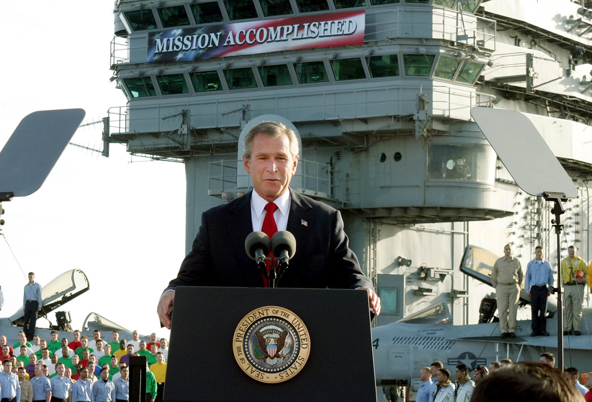

-

Our System Of Hate
After the Democratic Party won a majority of the seats of Congress in the 2006 midterm elections, the American people watched and waited for troops deployed to Iraq to slowly start rotating out, and sent on track to return home. It was a goal the Democrats campaigned on. However, their goals quickly changed.
More...
With the government of Saddam collapsed, and the war having been won, the Bush Administration proposes a shift in policy towards “security,” and a bipartisan Congress signs on to send another 20,000 soldiers to war.
The Western Coalition’s troop surge has been met with a more determined insurgent force. The result of which is a significant increase in the frequency of Coalition ground troops receiving direct small arms fires through ambushes. To combat this, a new strategy of having helicopters provide security to ground troops and their convoys was devised and put into standard practice.
The day is July 12th, 2007, it’s noon in Al-Amin al-Thaniyah, New Baghdad. Reuters journalists, Namir Noor-Eldeen and Saeed Chmagh, were interviewing the civilians attempting to live in the area.
While Saeed answered a call on his cellphone, Namir took a photo of a humvee nearby around the corner of a residential building. Namir and the crowd of locals surrounding him turn from the corner to continue down their path, but then dirt starts shooting up from the ground beneath them. In an instant, the men all scatter.
At least 1200 meters away and 1000 meters up, two American AH-64 Apache helicopters are requesting permission to fire upon a group of men gathered on a main road with AK-47s and an RPG. The pilots are given the go ahead to fire.
Chmagh is fatally wounded, but manages to leap out of the way of direct incoming fire. Multiple locals are lost, completely engulfed by the smoke-like dust produced by the attack helicopter’s 30mm round.
A projectile as long as a man’s forearm. The round is designed as an anti-material munition. Completely overkill for personnel, but with the Iraqi army of Saddam having long been dissolved, there isn’t much armor to contend with from a far weaker insurgent force.
Namir sprints off and out of the helicopter's direct fire, but falls not moments later. Separated from the killzone, but still alive, the Apache gunner singles out Namir. Namir is then bifurcated from the waist down. His foot is the last the world sees of him, flung high in the air as the gunner scans off to engage further targets.
Later that night the Department of Defense (DoD) reported, “Firefight in New Baghdad. US, Iraqi forces kill 9 insurgents, detain 13.” Continuing they said, “and two civilians were killed during the firefight.”
Months after the incident, in a closed door meeting with military officials, Iraq bureau chief for Reuters, Dean Yates, was given a story of half truths, and set on his way. It wasn’t until 3 years later, when the full length video was leaked by Chelsea Manning, and reported on by Wikileaks, that the world learned of what truly transpired.